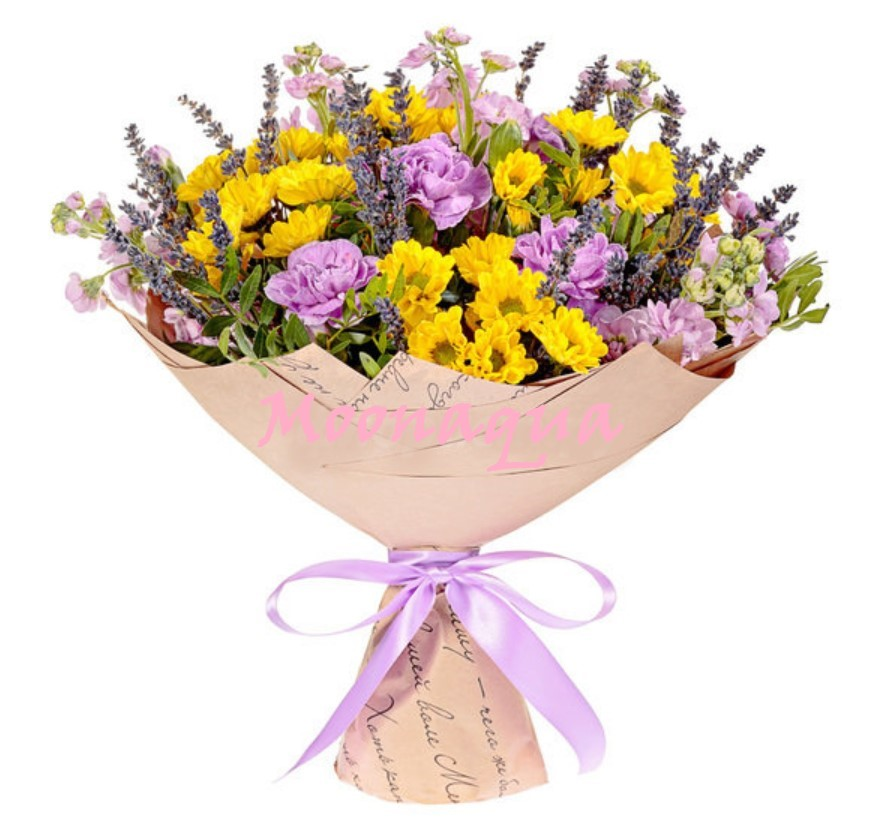
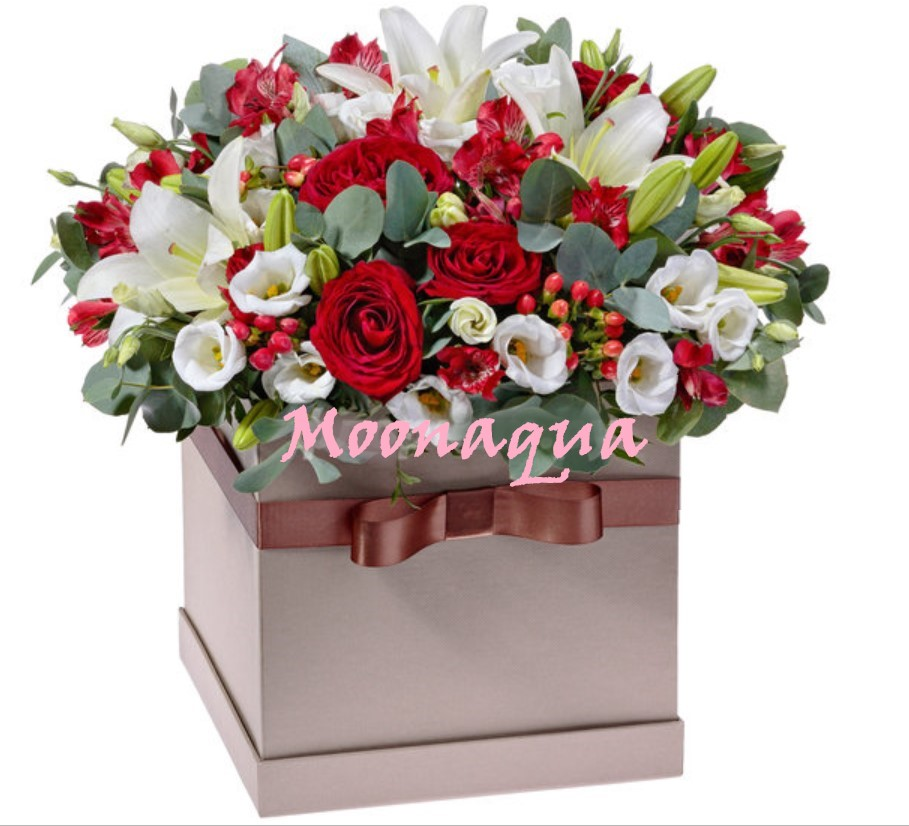
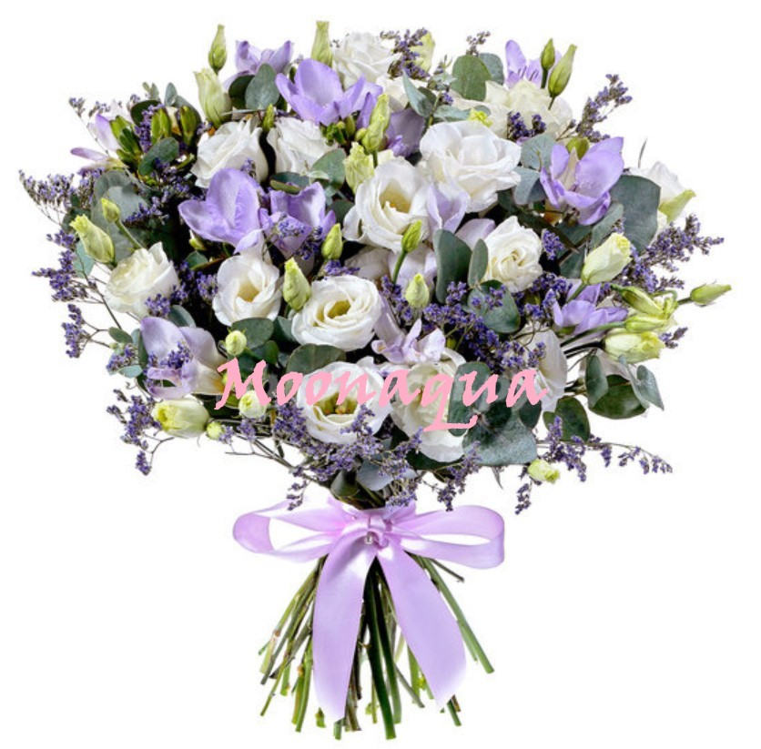
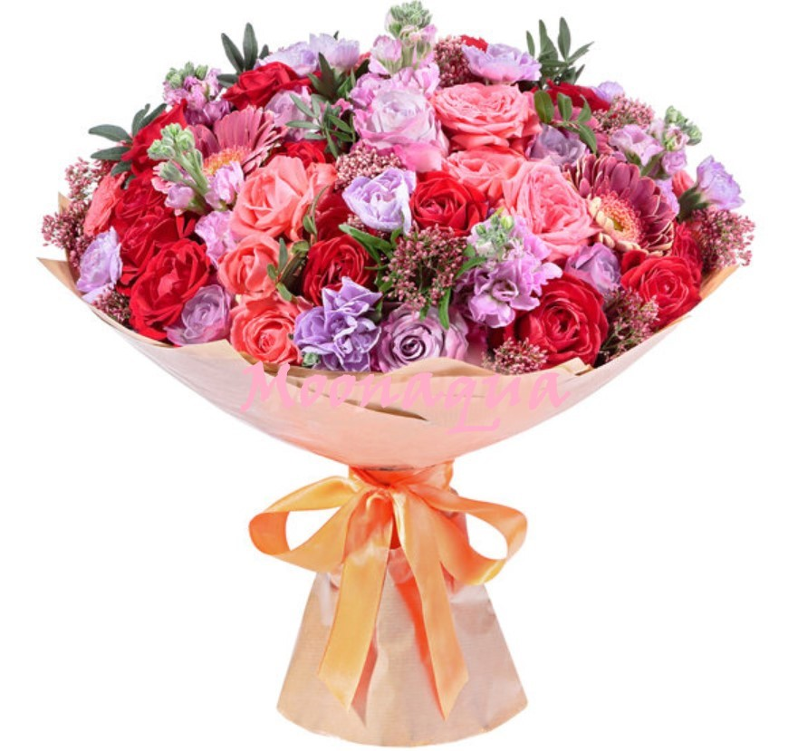

Цветочный салон
Moonaqua
Ты всегда рядом
Телефон: 8(342)565-55-55 ; 8(999)555-45-45
| |
Цветочный салонMoonaqua Ты всегда рядом |
Адрес: г.Пермь, ул.Снайперов, 1а
Телефон: 8(342)565-55-55 ; 8(999)555-45-45 |
| Главная | Товары | Оплата | Контакты |

Кружевные гвоздики, фиолетовая матиола, игривая хризантема сантини – простое цветочное сочетание, но какое красивое и обаятельное! Этот хрупкий и нежный букет станет идеальным подарком, который способен подчеркнуть очарование молодой девушки. |

Эта изумительная композиция - образец безукоризненного стиля и не изменяющей себе цветочной классики. Символичное сочетание страстных алых роз, красных год гиперикума и пунцовых альстромерий с невинной белизной лилий азиаток и лизиантусов дополнено холодной зеленью листьев эвкалипта. |

Совершенно очаровательный, одухотворённый, по-французски стильный и утончённый букет создан из синих фрезий, лазоревого лимониума и белоснежных лизиантусов. Этот цветочный комплимент в духе романтики Прованса, без сомнения, мечтает получить любая девушка. Порадуйте вашу непревзойдённую и любимую таким вдохновляющим сюрпризом, поднимающим настроение и дарящим ваши искренние чувства. |

Этот букет способен рассказать обо всех ваших чувствах. Нежная и трепетная композиция, сотканная из сплетения прекрасных розовых и красных роз, очаровательных матиол, кружевных голубых гвоздик, стильных гербер-мини и зелени писташ. Такой цветочный комплимент скажет слова любви за вас и покорит сердце вашей избранницы. |
Группа Б8419
Diana Vershinina
2019г.